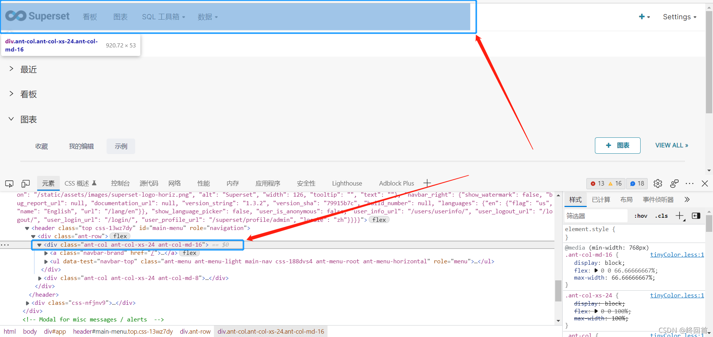
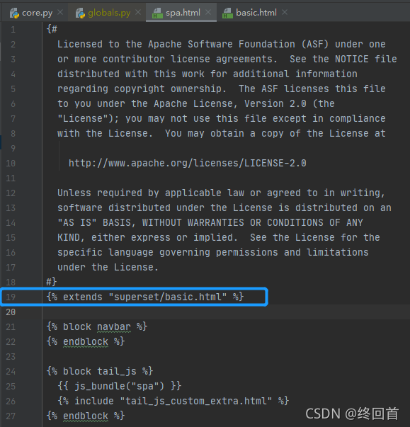
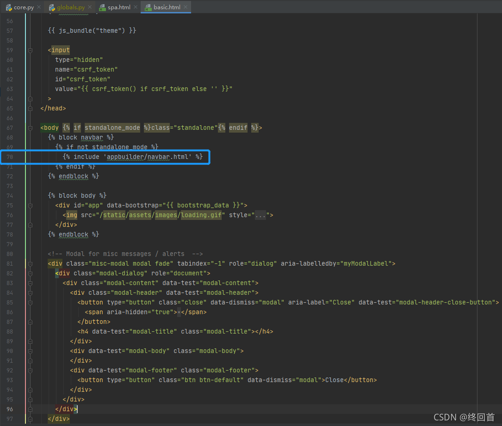

_superset源码剖析-CSDN博客_files/20230523100320.png)
_superset源码剖析-CSDN博客_files/20231212032739.png) 知道
知道
_superset源码剖析-CSDN博客_files/default.jpg!1)
_superset源码剖析-CSDN博客_files/20210918025138.gif)
_superset源码剖析-CSDN博客_files/40d49e89aeed4d50b8b32680f49e3ac1_lovemy134611.jpg!0)
_superset源码剖析-CSDN博客_files/20230921102607.png)
_superset源码剖析-CSDN博客_files/20230815023232.png)
_superset源码剖析-CSDN博客_files/original.png)
_superset源码剖析-CSDN博客_files/newCurrentTime2.png)
_superset源码剖析-CSDN博客_files/articleReadEyes2.png)
_superset源码剖析-CSDN博客_files/tobarCollect2.png)
_superset源码剖析-CSDN博客_files/tobarCollectionActive2.png)
_superset源码剖析-CSDN博客_files/newHeart2023Active.png)
_superset源码剖析-CSDN博客_files/newHeart2023Black.png)
_superset源码剖析-CSDN博客_files/20201014180756930.png)
我的Superset源码阅读笔记
版本
Superset 1.3.2
一、技术框架
搭建环境参考Apache Superset二次开发环境配置
Superset使用到的技术框架：
-
前端采用 ，D3
– React：为数据提供渲染为HTML视图的开源JavaScript 库
– jinja Python 模板语言，渲染html用的
– D3：数据可视化javascript库 -
spuerset 后端采用Flask及Flask其他插件：Flask-AppBuilder、Sqlachermy，celery，pandas
– Flask Python微型web框架
– Flask-AppBuilder : 登录验证，权限控制。
– Flask-Login 登录
– Flask-WTF 表单校验
– sqlachermy: 数据引擎，连接DB
– pandas：数据处理
– celery：定时异步任务
二、目录结构
1 整体目录结构
打开gitbash
# 进入项目根目录
cd $SUPERSET_HOME
# 查看当前目录内容，为了方便查看删掉了一些多余内容
$ ls -la
total 1427
.
..
.asf.yaml
.codecov.yml
.dockerignore
.editorconfig
.flaskenv
.fossa.yml
.git
.github
.gitignore
.gitmodules
.idea
.pre-commit-config.yaml
.pylintrc
.rat-excludes
CHANGELOG.md
CODE_OF_CONDUCT.md
CONTRIBUTING.md
Dockerfile
INSTALL.md
LICENSE.txt
MANIFEST.in
Makefile
NOTICE
README.md
RELEASING
RESOURCES
UPDATING.md
apache_superset.egg-info
docker
docker-compose-non-dev.yml
docker-compose.yml
docs
helm
lintconf.yaml
pytest.ini
requirements
scripts
setup.cfg
setup.py
start.py
superset # 后端项目所在目录
superset-frontend # 前端项目所在目录
superset-websocket
tests
tox.ini
venv
- 1
- 2
- 3
- 4
- 5
- 6
- 7
- 8
- 9
- 10
- 11
- 12
- 13
- 14
- 15
- 16
- 17
- 18
- 19
- 20
- 21
- 22
- 23
- 24
- 25
- 26
- 27
- 28
- 29
- 30
- 31
- 32
- 33
- 34
- 35
- 36
- 37
- 38
- 39
- 40
- 41
- 42
- 43
- 44
- 45
- 46
- 47
- 48
- 49
- 50
- 51
- 52
- 53
2 前端目录结构
# 进入前端目录
cd $SUPERSET_HOME/superset-frontend
# 查看前端目录结构
$ ls -la
total 4379
.
..
.eslintignore
.eslintrc.js
.gitignore
.idea
.nvmrc
.storybook
babel.config.js
cypress-base
cypress_build.sh
images
jest.config.js
js_build.sh
jsconfig.json
node_modules
package-lock.json
package.json
prettier.config.js
spec
src # 前端重要文件
stylesheets
tsconfig.json
webpack.config.js # 前端入口文件
webpack.proxy-config.js
- 1
- 2
- 3
- 4
- 5
- 6
- 7
- 8
- 9
- 10
- 11
- 12
- 13
- 14
- 15
- 16
- 17
- 18
- 19
- 20
- 21
- 22
- 23
- 24
- 25
- 26
- 27
- 28
- 29
- 30
3 后端目录结构
# 进入后端目录
cd $SUPERSET_HOME/superset
# 查看后端目录结构
$ ls -la
total 436
.
..
__init__.py
__pycache__
annotation_layers
app
app.py # 后端服务启动入口
async_events
cachekeys
charts # 图表相关接口
cli.py
commands
common
config.py # 配置文件
connectors # 连接器
constants.py # 静态变量
css_templates
dao # 公共的增删改查实现
dashboards # 仪表盘相关接口
databases # 数据库相关接口
dataframe.py
datasets # 数据集（表）相关接口
db_engine_specs # 数据源兼容
db_engines
errors.py
examples # 示例
exceptions.py
extensions.py
forms.py # 表单
initialization
jinja_context.py
legacy.py
migrations # 升级相关实现
models # 数据库模型
queries # 查询相关实现
reports
result_set.py
schemas.py
security # 用户和权限相关实现
sql_lab.py
sql_parse.py
sql_validators
sqllab
static # 静态资源
stats_logger.py
tasks
templates # 页面模板
translations # 语言本地化
typing.py
utils
views # 视图层
viz.py # 所有可视化的基类
- 1
- 2
- 3
- 4
- 5
- 6
- 7
- 8
- 9
- 10
- 11
- 12
- 13
- 14
- 15
- 16
- 17
- 18
- 19
- 20
- 21
- 22
- 23
- 24
- 25
- 26
- 27
- 28
- 29
- 30
- 31
- 32
- 33
- 34
- 35
- 36
- 37
- 38
- 39
- 40
- 41
- 42
- 43
- 44
- 45
- 46
- 47
- 48
- 49
- 50
- 51
- 52
- 53
- 54
- 55
- 56
- 57
三、源码流程
一般流程
- 页面发起请求
- 如果需要表单才能完成的功能，先请求表单；再提交表单
- 如果不需要表单，请求后台接口
1 登录
- 后台服务启动
- 浏览器访问http://localhost:3000/实际访问的是flask_appbuilder/templates/appbuilder/index.html
- index.html调用的是superset/views/core.py里的welcome方法，这里可能是判断未登录，所以重定向到了login
- welcome 调用
http://localhost:3000/login/接口 - 默认是db方式，所以调用的是flask_appbuilder/security/views.py里的AuthDBView的login方法获取登录表单，这个login是get请求
- login返回登录表单，填写用户名密码，还是调用login，这次是post
- 重定向到http://localhost:3000/
2 注册
默认未开启注册，添加配置后才可注册
开启注册功能的配置
在superset项目根目录的config.py中修改或添加如下配置项
AUTH_TYPE = 1 # Database Authentication
AUTH_USER_REGISTRATION = True
AUTH_USER_REGISTRATION_ROLE = 'Public'
# Config for Flask-WTF Recaptcha necessary for user registration
RECAPTCHA_PUBLIC_KEY = 'GOOGLE PUBLIC KEY FOR RECAPTCHA'
RECAPTCHA_PRIVATE_KEY = 'GOOGLE PRIVATE KEY FOR RECAPTCHA'
# Config for Flask-Mail necessary for user registration
MAIL_SERVER = 'smtp.gmail.com'
MAIL_USE_TLS = True
MAIL_USERNAME = 'yourappemail@gmail.com'
MAIL_PASSWORD = 'passwordformail'
MAIL_DEFAULT_SENDER = 'fabtest10@gmail.com'
- 1
- 2
- 3
- 4
- 5
- 6
- 7
- 8
- 9
- 10
- 11
- 12
流程：
- 打开superset登录界面，点击REGISTER，请求的url为http://localhost:3000/register/form
- form调用的是flask_appbuilder/security/registerviews.py的RegisterUserDBView的form_get方法
- 填完用户名密码等，点击注册调用的是flask_appbuilder/security/registerviews.py的RegisterUserDBView的form_post方法
- 注册完成重定向到http://localhost:3000/login/登录页面
3 查询所有Dashboard
- 接口url：
http://localhost:3000/api/v1/dashboard/ - 看日志请求的是DashboardRestApi.get_list，DashboardRestApi没有get_list方法，找父类BaseSupersetModelRestApi
- BaseSupersetModelRestApi也没有，不过继承了flask_appbuilder的ModelRestApi
- 果然在ModelRestApi里找到了get_list方法，而get_list最终调用了get_list_headless方法
4 显示导航栏流程
- 访问登录页面http://localhost:3000/login/，填入用户名密码，点击登录
- 调用的是superset/views/core.py里的welcome方法，welcome返回superset/spa.html
导航栏分为左和右两个部分，我们关注的是左边的

在superset/spa.html里找了一下未发现和navbar相关的东西
不过spa.html继承了basic.html

- basic.html又include了appbuilder/navbar.html

到这里线索断了
建议
读superset源码时，一定要结合Flask Appbuilder官方文档一起读,superset官方文档没提到的内容基本上都可以在Flask Appbuilder官方文档里找到
参考资料
文章知识点与官方知识档案匹配，可进一步学习相关知识
MySQL入门技能树首页概览79119 人正在系统学习中
_superset源码剖析-CSDN博客_files/vip-limited-close.png)
_superset源码剖析-CSDN博客_files/tobarThumbUpactive.png)
_superset源码剖析-CSDN博客_files/newHeart2021Active.png)
_superset源码剖析-CSDN博客_files/newHeart2021Black.png)
_superset源码剖析-CSDN博客_files/newUnHeart2021Active.png)
_superset源码剖析-CSDN博客_files/newUnHeart2021Black.png)
_superset源码剖析-CSDN博客_files/tobarCollectionActive.png)
_superset源码剖析-CSDN博客_files/newCollectBlack.png)
_superset源码剖析-CSDN博客_files/newCollectActive.png)
_superset源码剖析-CSDN博客_files/newComment2021Black.png)
_superset源码剖析-CSDN博客_files/newShareBlack.png)
_superset源码剖析-CSDN博客_files/npsFeel1.png)
_superset源码剖析-CSDN博客_files/npsFeelGrey1.png)
_superset源码剖析-CSDN博客_files/npsFeel2.png)
_superset源码剖析-CSDN博客_files/npsFeelGrey2.png)
_superset源码剖析-CSDN博客_files/npsFeel3.png)
_superset源码剖析-CSDN博客_files/npsFeelGrey3.png)
_superset源码剖析-CSDN博客_files/npsFeel4.png)
_superset源码剖析-CSDN博客_files/npsFeelGrey4.png)
_superset源码剖析-CSDN博客_files/npsFeel5.png)
_superset源码剖析-CSDN博客_files/npsFeelGrey5.png)
_superset源码剖析-CSDN博客_files/tel.png)
_superset源码剖析-CSDN博客_files/email.png)
_superset源码剖析-CSDN博客_files/cs.png)
_superset源码剖析-CSDN博客_files/closeBt.png)
_superset源码剖析-CSDN博客_files/iconPark.png) 到【灌水乐园】发言
到【灌水乐园】发言_superset源码剖析-CSDN博客_files/default.jpg!2)
_superset源码剖析-CSDN博客_files/pay-time-out.png)
_superset源码剖析-CSDN博客_files/weixin.png)
_superset源码剖析-CSDN博客_files/zhifubao.png)
_superset源码剖析-CSDN博客_files/jingdong.png)
_superset源码剖析-CSDN博客_files/pay-help.png)
_superset源码剖析-CSDN博客_files/recharge.png)
_superset源码剖析-CSDN博客_files/closeBlack.png)
_superset源码剖析-CSDN博客_files/iconShowDirectory.png)
_superset源码剖析-CSDN博客_files/iconHideDirectory.png)
_superset源码剖析-CSDN博客_files/iconShowSide.png)
_superset源码剖析-CSDN博客_files/iconHideSide.png)
_superset源码剖析-CSDN博客_files/guide.png)
_superset源码剖析-CSDN博客_files/kefu.png)
_superset源码剖析-CSDN博客_files/fanhuidingbucopy.png)
_superset源码剖析-CSDN博客_files/quoteClose1White.png)
网页链接